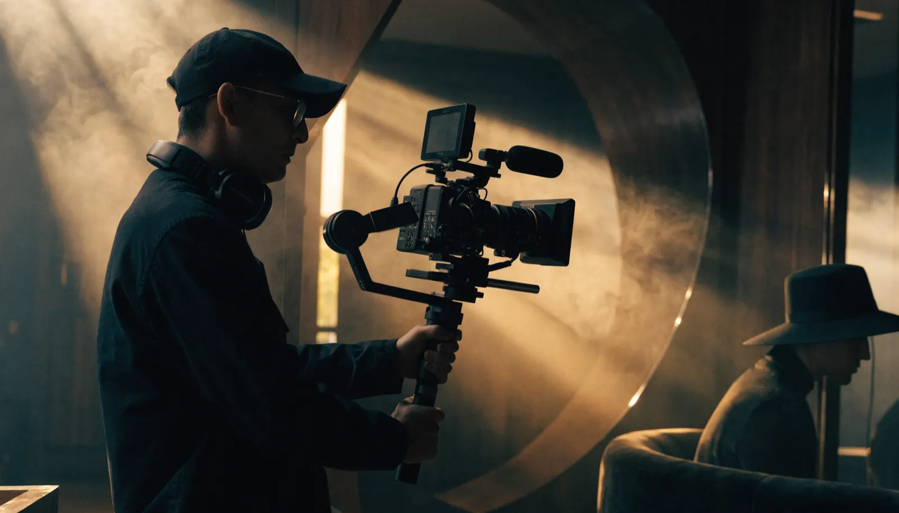

ブランディング動画 ｜ 東京 ｜ 制作
選ばれる理由は、
機能ではなく共感です。
東京でブランディング動画の制作をお探しの方へ。株式会社NOKTOAは、企業やブランドの世界観・価値観を映像で表現し、見る人の共感とファンを育てるブランディング動画を、企画から撮影・編集まで自社完結で制作します。

ブランディング動画とは
ブランディング動画とは、企業やブランドの世界観・価値観・らしさを映像で表現し、見る人の感情や記憶に働きかける動画です。商品の機能を売り込むのではなく、共感やファンを育てることを目的とします。
機能やスペックで差をつけるのが難しくなった今、顧客が最後に選ぶ理由は「このブランドが好きだから」という感情に移っています。ブランディング動画は、その感情を生み出すための手段です。何を大切にし、どんな世界を目指しているのか——言葉にしづらいブランドの芯を、映像の力で伝えます。
東京には魅力的な企業やブランドが無数にあります。その中で記憶に残り、選ばれ続けるためには、機能の訴求だけでは足りません。見た人の心に残る世界観を持っているかどうかが、長期的な強さの差になります。
近年は、消費者が「何を買うか」だけでなく「どの会社から買うか」「その会社は何を大切にしているか」まで見て選ぶようになりました。価格競争から抜け出し、選ばれる理由を価格以外につくるうえで、ブランディング動画は強力な武器になります。世界観への共感は、簡単には他社に奪われない、最も模倣しにくい競争力だからです。
ブランディング動画がもたらす3つの効果
結論：ブランディング動画は「すぐ売る」より「長く選ばれる」ための投資です。
1. 共感とファンを育てる
世界観に共感した人は、価格や機能だけで離れない「ファン」になります。広告費に頼らず選ばれ続ける土台が生まれます。
2. 採用や社内の求心力になる
ブランドの理念を映像で示すことは、共感する人材を引き寄せ、働く社員の誇りや一体感を高めることにもつながります。
3. 発信全体の軸になる
世界観が明確な一本があれば、SNS・広告・PR・採用など、あらゆる発信のトーンがそろい、ブランドが積み上がっていきます。
これらは一夜にして得られるものではありません。だからこそ、流行に流されない普遍的な設計と、ブランドの芯を捉える企画力が問われます。ブランディング動画は、即効性ではなく積み上げで効く投資です。一度しっかりと世界観を定義しておけば、その後の発信すべてに一貫性が生まれ、時間とともにブランドの価値が複利的に高まっていきます。
NOKTOAのブランディング動画が選ばれる理由
結論：私たちは「世界観の言語化」と「映像表現」を一社で完結できます。
ブランディング動画で最も難しいのは、言葉にしづらいブランドの芯を掴み、それを映像に翻訳することです。NOKTOAは、代表が顧客のビジネスモデルとブランドを解読して発信の軸を設計し、クリエイティブ統括が20年のキャリアでそれを視覚化します。戦略と表現の両輪を一社で担えることが、ブランディングにおける決定的な強みです。
- ブランドの世界観整理から始め、伝えるべき芯を言語化する
- 企画・撮影・編集を自社完結。世界観が最後までブレない
- 感情を動かす映像表現を支える、20年のクリエイティブ品質
- 動画を起点に、SNS・PR・採用まで一貫した発信設計が可能
東京でブランディング動画の制作を頼むなら、映像だけでなく「ブランドそのものを一緒に考えてくれる会社」を選ぶことをおすすめします。それが、長く効く一本を生む条件です。
成功するブランディング動画の3つの条件
結論：成否は「映像のかっこよさ」ではなく「芯のブレなさ」で決まります。
1. 伝えたい価値が一つに絞られている
あれもこれもと欲張ると、世界観はぼやけます。最も大切にしている価値を一つに絞り、それを全編で貫くことが、記憶に残る動画の条件です。
2. らしさが、表面でなく本質から出ている
流行の演出を借りた世界観は、すぐに他社と似てしまいます。本当に強いブランディング動画は、その企業の事業や哲学という本質から世界観が立ち上がっています。
3. 単発で終わらせず、発信全体に展開する
動画を作って終わりではなく、そこで定めた世界観をSNS・広告・採用・店舗体験にまで広げることで、ブランドは一貫性を持って積み上がります。
これらの条件を満たすには、映像技術だけでなく、ブランドの本質を掴む洞察力が欠かせません。NOKTOAは、ビジネスの解読からブランドの芯を言語化し、それを映像と発信全体に一貫させることを得意としています。だからこそ、流行に流されず長く効くブランディング動画が生まれます。
料金は、ブランドの状況に合わせて設計します
ブランディング動画の費用は「一律いくら」ではありません。ブランドのフェーズ、表現の規模、撮影の作り込みによって最適な構成が変わるからです。NOKTOAは決まったパッケージを売るのではなく、ご予算と目的を伺って、その範囲で最も効果が出る構成を逆算してご提案します。
スモールスタート
まず世界観整理と1本の象徴的な動画から。芯を固めたい方に。
スタンダード
企画から作り込み、ブランドの世界観を本格的に表現する構成。
フラッグシップ
大規模撮影やキャスティング込みで、ブランドを象徴する基幹映像に。
「この予算で何ができる？」というご相談こそ大歓迎です。最初から大きく投資する必要はありません。世界観整理から始めて、段階的に育てる進め方もご提案します。まだ構想段階で、何から手をつければよいか分からないという状態でも大丈夫です。現状の整理からご一緒しますので、お気軽にお問い合わせください。ご相談・お見積もりは無料です。
よくあるご質問
ブランディング動画とは何ですか？
企業やブランドの世界観・価値観・らしさを映像で表現し、見る人の感情や記憶に働きかける動画です。機能を売り込むのではなく、共感やファンを育てることを目的とします。
ブランディング動画の制作費用は東京でいくらですか？
企画から作り込むもので80〜200万円、大規模撮影やキャスティングを伴うもので200万円以上が一般的な目安です。NOKTOAはご予算と目的に合わせてご提案します。
ブランディング動画とPR動画の違いは何ですか？
PR動画は商品やサービスの認知・販促が目的のことが多く、ブランディング動画はブランドの世界観や価値観を伝え、長期的な共感や信頼を育てるのが目的です。
世界観がまだ言語化できていなくても大丈夫ですか？
はい。むしろそこからご一緒するのが私たちの得意領域です。ヒアリングを通じてブランドの芯を言語化するところから始めます。創業の想いや事業の背景を伺いながら、まだ言葉になっていない「らしさ」を一緒に見つけ出していきます。